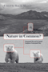

Browse
other Titles:
A B C
D E F
G H I
J K L
M N O
P Q R
S T U
V W X
Y Z |
 |
A
Nation by Rights
National Cultures, Sexual Identity Politics, and the Discourse
of Rights
Stychin,
Carl F.
256 pp • 5.5x8.25 • Spring 1998
paper 978-1-56639-624-0
cloth 978-1-56639-623-3
|
 |
National
Insecurity
U.S. Intelligence After the Cold War
edited
by Eisendrath, Craig, foreword by Tom Harkin
296 pp • 6x9 • Fall 1999
paper 978-1-56639-848-0
cloth 978-1-56639-744-5
|
|
National
Lawyers Guild
From Roosevelt through Reagan
edited
by Ginger, Ann Fagan and Eugene M. Tobin, foreword by Clark
Ramsey
344 pp • Fall 1987
cloth 978-0-87722-488-4 |
|
The
National Question
Nationalism, Ethnic Conflict, and Self-Determination in the Twentieth
Century
edited
by Berberoglu, Berch
344 pp • 6x9 • Fall 1995
paper 978-1-56639-343-0
cloth 978-1-56639-342-3
|
 |
Native
Sons
Philadelphia Baseball Players Who Made the Major Leagues
Westcott,
Rich, foreword by Bill Campbell
184 pp • 5.5x8.25 • Fall 2003
paper 978-1-59213-215-7
|
|
Natural
Signs
A Theory of Intentionality
Addis,
Laird
199 pp • 6x9 • Fall 1989
cloth 978-0-87722-631-4
|
 |
Nature in Common?
Environmental Ethics and the Contested Foundations of Environmental Policy
Minteer, Ben A.
312 pp • 6x9 • Spring 2009
paper 978-1-59213-704-6
cloth 978-1-59213-703-9
|
 |
Nature's
Keeper
Wenz,
Peter S.
240 pp • 5.5x8.25 • Spring 1996
paper 978-1-56639-428-4
cloth 978-1-56639-427-7
|
|
Navigating Gendered Terrain
Stereotypes and Strategy in Political Campaigns
Dittmar, Kelly
230 pp • 6x9 • Fall 2014
paper 978-1-43991-149-5
cloth 978-1-43991-148-8 |
 |
The
Nazi Census
Identification and Control in the Third Reich
Aly,
Götz and Karl Heinz Roth, foreword by Edwin Black, translated
by Assenka Oksiloff
192 pp • 5.5x8.25 • Spring 2004
paper 978-1-59213-259-1
cloth 978-1-59213-199-0
|

|
Nearest East
American Millennialism and Mission to the Middle East
Kieser, Hans-Lukas
224 pp • 6x9 • Spring 2010
paper 978-1-4399-0223-3
cloth 978-1-4399-0222-6
|
 |
A
Needle, a Bobbin, a Strike
Women Needleworkers in America
edited
by Jensen, Joan M. and Sue Davidson
256 pp • Fall 1984
paper 978-0-87722-407-5
cloth 978-0-87722-340-5 |
|
Negotiated
Care
The Experience of Family Day Care Providers
Nelson,
Margaret K.
400 pp • Fall 1990
cloth 978-0-87722-728-1 |
 |
Neither
Separate Nor Equal
Women, Race, and Class in the South
edited
by Smith, Barbara Ellen
296 pp • 6x9 • Spring 1999
paper 978-1-56639-680-6
cloth 978-1-56639-679-0 |
 |
The
Neoconservative Mind
Politics, Culture, and the War of Ideology
Dorrien,
Gary
512 pp • 6x9 • Spring 1993
paper 978-1-56639-144-3
cloth 978-1-56639-019-4 |
|
Neopolitics
American Political Ideas in the 1980s
Medcalf,
Linda J. and Kenneth M. Dolbeare
224 pp • Spring 1985
cloth 978-0-87722-388-7 |
 |
Never Easy, Never Pretty
A Fan, A City, A Championship Season
Smith, Dean Bartoli
224 pp • 6x9 • Fall 2013
cloth 978-1-4399-1106-8 |
|
Never
Married Women
Simon,
Barbara Levy
228 pp • Fall 1987
paper 978-0-87722-671-0
cloth 978-0-87722-497-6 |

|
New Advances in the Study of Civic Voluntarism
Resources, Engagement, and Recruitment
edited by Klofstad, Casey A.
294 pp • 6x9 • Fall 2016
paper 978-1-4399-1325-3
cloth 978-1-4399-1324-6
|
 |
The
New American History
edited
by Foner, Eric
400 pp • 6x9 • Spring 1997
paper 978-1-56639-552-6
cloth 978-1-56639-551-9
|
 |
The
New Asian Immigration in Los Angeles and Global Restructuring
edited
by Ong, Paul, Edna Bonacich and Lucie Cheng
344 pp • 6x9 • Fall 1994
paper 978-1-56639-218-1
cloth 978-1-56639-217-4 |

|
A New Brand of Business
Charles Coolidge Parlin, Curtis Publishing Company, and the Origins of Market Research
Ward, Douglas B.
240 pp • 5.5x8.25 • Spring 2009
cloth 978-1-43990-015-4
|
 |
The New Eagles Encyclopedia
Didinger,
Ray with Robert S. Lyons 440 pp •
8.3125x10.875 • Fall 2014
cloth 978-1-43991-211-9 |
 |
The
New Censors
Movies and the Culture Wars
Lyons,
Charles
248 pp • 5.5x8.25 • Spring 1997
paper 978-1-56639-512-0
cloth 978-1-56639-511-3
|

|
The
New Chicago
A Social and Cultural Analysis
edited by Koval, John P., Larry Bennett, Michael I. J. Bennett,
Fassil Demissie, Roberta Garner and Kiljoong Kim
384 pp • 7x10 • Fall 2006
paper 9781-59213-088-7
cloth 978-1-59213-087-0
|

|
The New Freedom and the Radicals
Woodrow Wilson, Progressive Views of Radicalism, and the Origins of Repressive Tolerance
Kramer, Jacob
New in Paperback!
242 pp • 6x9 • Spring 2017
paper 978-1-4399-0839-6
cloth 978-1-4399-0838-9 |
|
New
Homeless and Old
Community and the Skid Row Hotel
Hoch,
Charles and Robert A. Slayton
312 pp • Spring 1989
paper 978-0-87722-765-6
cloth 978-0-87722-600-0 |
|
A
New Housing Policy for America
Recapturing the American Dream
Schwartz,
David C., Richard C. Ferlauto and Daniel N. Hoffman, foreword
by Bill Bradley
288 pp • Spring 1988
paper 978-0-87722-568-3
cloth 978-0-87722-567-6 |
 |
New
Immigrants, Old Unions
Organizing Undocumented Workers in Los Angeles
Delgado,
Héctor L.
200 pp • 5.5x8.25 • Spring 1993
paper 978-1-56639-205-1
cloth 978-1-56639-044-6 |
 |
New
Jack Jocks
Rebels, Race, and the American Athlete
Platt,
Larry
208 pp • 5.5x8.25 • Spring 2002
paper 978-1-59213-191-4
cloth 978-1-56639-954-8
|
 |
The
New Left Revisited
edited
by McMillian, John and Paul Buhle
280 pp • 7x10 • Fall 2002
paper 978-1-56639-976-0
cloth 978-1-56639-975-3
|
 |
New
Left, New Right, and the Legacy of the Sixties
Lyons,
Paul
256 pp • 5.5x8.25 • Fall 1996
paper 978-1-56639-478-9
cloth 978-1-56639-477-2 |
|
The
New Populism
The Politics of Empowerment
edited
by Boyte, Harry C. and Frank Riessman
336 pp • Fall 1986
paper 978-0-87722-449-5
cloth 978-0-87722-429-7 |
 |
New
Social Movements
From Ideology to Identity
edited
by Laraña, Enrique, Hank Johnston and Joseph R. Gusfield
368 pp • 6x9 • Fall 1994
paper 978-1-56639-187-0
cloth 978-1-56639-186-3
|
|
New
Soviet Thinking and U.S. Nuclear Policy
Myers,
David B.
304 pp • Fall 1990
cloth 978-0-87722-710-6 |
|
The New York Young Lords and the Struggle for Liberation
Wanzer-Serrano, Darrel
244 pp • 6x9
• Spring 2015
paper 978-1-4399-1203-4
cloth 978-1-4399-1202-7 |
 |
Newcomers
in Workplace
Immigrants and the Restructing of the U.S. Economy
edited
by Lamphere, Louise, Alex Stepick and Guillermo Grenier
320 pp • 6x9 • Fall 1993
paper 978-1-56639-131-3
cloth 978-1-56639-124-5 |
|
The Next Social Contract
Animals, the Anthropocene, and Biopolitics
Gabardi, Wayne
242 pp • 6x9 • Spring 2017
paper 978-1-4399-1412-0
cloth 978-1-4399-1411-3 |
 |
The NFL
Critical and Cultural Perspectives
edited by Oates, Thomas P. and Zack Furness
Foreword by Michael Oriard
256 pp • 6x9 • Spring 2014
paper 978-1-4399-0958-4
cloth 978-1-4399-0957-7 |
 |
A Nice Place to Visit
Tourism and Urban Revitalization in the Postwar Rustbelt
Cowan, Aaron
236 pp • 6x9 • Spring 2016
paper 978-1-4399-1346-8
cloth 978-1-4399-1345-1
|
|
Nietzsche's
Zarathustra
Higgins,
Kathleen Marie
328 pp • Fall 1987
paper 978-0-87722-687-1
cloth 978-0-87722-482-2 |
 |
The
Nights of Labor
The Workers' Dream in Nineteenth-Century France
Rancière,
Jacques, translated by John Drury, introduction by Donald Reid
448 pp • Fall 1989
paper 978-0-87722-833-2
cloth 978-0-87722-625-3 |
|
Nisei/Sansei
Shifting Japanese American Identities and Politics
Takahashi,
Jere
280 pp • 6x9 • Fall 1997
paper 978-1-56639-659-2
cloth 978-1-56639-550-2
|
|
No
Easy Walk
Newark, 1980-1993
Stummer,
Helen M.
160 pp • 7x10 • Fall 1994
paper 978-1-56639-243-3
cloth 978-1-56639-242-6 |
|
No
Longer Patient
Feminist Ethics and Health Care
Sherwin,
Susan
280 pp • Fall 1991
paper 978-1-56639-061-3
cloth 978-0-87722-889-9
|
 |
No
Mercy
How Conservative Think Tanks and Foundations Changed America's
Social Agenda
Stefancic,
Jean and Richard Delgado, foreword by Mark Tushnet
208 pp • 6x9 • Fall 1996
cloth 978-1-56639-469-7 |
 |
No More Invisible Man
Race and Gender in Men's Work
Wingfield, Adia Harvey
212 pp • 5.5x8.25 • Fall 2012
paper 978-1-4399-0973-7
cloth 978-1-4399-0972-0
|
 |
No
Sword to Bury
Japanese Americans in Hawai’i during World War II
Odo,
Franklin S.
336 pp • 6x9 • Fall 2003
paper 978-1-59213-270-6
cloth 978-1-59213-207-2
|
 |
No-Collar
The Humane Workplace and Its Hidden Costs
Ross,
Andrew
312 pp • 6.125x9.25 • Fall 2004
paper 978-1-59213-150-1
|
 |
Nomads
of the Present
Social Movements and Individual Needs in Contemporary Society
Melucci,
Alberto, edited by John Keane and Paul Mier
320 pp • Fall 1988
cloth 978-0-87722-599-7 |
|
Normative
Politics and the Community of Nations
Fain,
Haskell
272 pp • Spring 1987
cloth 978-0-87722-476-1 |
|
Not
for the Poor Alone
European Social Services
Kahn,
Alfred J. and Sheila B. Kamerman
197 pp • Fall 1975
cloth 978-0-87722-045-9 |

|
Not from Here
A Memoir
Johnson, Allan G.
186 pp • 5.5x8.25 • Spring 2015
cloth 978-1-4399-1245-4 |
|
Not
June Cleaver
Women and Gender in Postwar America, 1945-1960
edited
by Meyerowitz, Joanne
424 pp • 6x9 • Spring 1994
paper 978-1-56639-171-9
cloth 978-1-56639-170-2
|
 |
Nothing,
Nobody
The Voices of the Mexico City Earthquake
Poniatowska,
Elena, translated by Aurora Camacho de Schmidt, foreword by
Arthur Schmidt
384 pp • 6x9 • Fall 1995
paper 978-1-56639-345-4
cloth 978-1-56639-344-7
|
 |
Nuclear
Power and Social Power
Eckstein,
Rick
208 pp • 5.5x8.25 • Fall 1996
paper 978-1-56639-486-4
cloth 978-1-56639-485-7 |
 |
Numbers on the Move
1 2 3 Dance and Count with Me
Benzwie, Teresa, Illustrated by Mark Weber
32 pp • 11x8.5 • Spring 2011
cloth 978-1-4399-0342-1 |